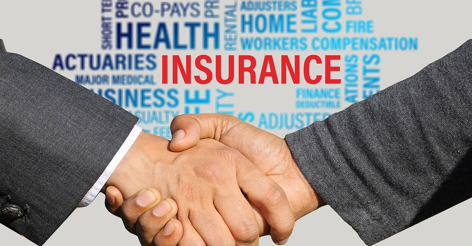

1 / 3
Caption Text
2 / 3

Caption Two
3 / 3

Caption Three
Insurance Agent is a banking sector insurance vocational trade. The duration of trade is one semester of six months. During study hours, students are introduced to various areas of banking insurance areas like working for insurance companies selling life, auto, home and related insurance coverage to consumers; working between insurance companies and insurance buyers, including individuals and business; advising customers on the insurance policies that best suit their needs and the like related areas. Trade is very important from career/job point of view as it opens many scopes in banking sector both in government and private owned.
.Candidates should be passed in 10th class examination from a recognized school board in the country.
.Insurance Agent
Sales Agent
Insurance Broker
Employee Benefits Insurance Agent
Insurance Sales Representative
Licensed Insurance Sales Agent
Claims Operations Associate
| Sr.No. | Subjects of Study | |
|---|---|---|
| Trade practical | Trade theory | |
| 1 | insurance Principles: 1. Preparation of example sheets regarding the insurance interest, reinsurance and double insurance. 2. Proforma or format of Insurance Policy. 3. Filling up of various types of proposals forms and policy forms. 4. Practical training in preparation of claims forms with examples. 5. Examples of Indemnity, Subrogation and contribution. 6. Assessment of proximate cause in practice. 7. Drafting of Under writing proposals. 8. Knowledge of General Safety, Occupational health and hygiene | ntroduction to Insurance: Purpose & need of Insurance. Insurance as a Social Security Tool. Role of Insurance in the development of economy. 1. Meaning, origin of Insurance, Importance and objective of Insurance, Investment and risk coverage, concept of re-insurance and double insurance. Insurance Business and its scope in India. 2. Principles of Insurance; Contract of Insurance, Insurable interest,Indemnity, Subrogation, contribution and Proximate Cause, Moral Hazard. 3. Types of Insurance: Life, Property, General and liability. Their Salient features, objectives and functions. The Insurances Act., 1938. 4. Under writing knowledge of all types of insurance Policies and procedures for issuing polices. 5. Insurance Administration |
| 2 | Insurance Document: Capital need analysis. Human Life Value (HLV) Life Insurance Products. Preparation of various Life Insurance Policy Documents. 1. Filing up of Proposal Forms, Personal statements and medical reports. 2. Calculations of Policy loans, Procedure of transferring the Policy from one office to another. 3. Drafting of nomination and assignment forms. 4. Preparation and completion of Register of Claims. 5. Practical calculation of Bonus 6. Calculation of interest on loan. 7. Practical example of investigating premature claims. 8. Visit and study of working procedure in life insurance offices | 1. Nature, principles and objectives. 2. Difference from other types of Insurance; Annuity contracts. 3. Policy Holders servicing 4. Claims settlements 5. Functions of Insurance Organizations 6. Investment |
| 3 | Other Distribution Channel: General Insurance 1. Introduction of General Insurance, Basic Principles of Insurance. 2. Filling up proposal forms, Types of five policies etc. 3. Actual calculation of Premium, Preparation of endorsements and renewals, Drafting of fire policies, Preparation of claims, scrutiny of fire, losses etc. 4. Read and observe clauses of various Marine Policies. 5. Preparation of claims amount relating to marine losses. 6. Preparation of proposal forms, cover notes, Policy forms of Motor Insurance. 7. Gather practical experience of classifying various risks and their coverage. 8. Calculate premium on certain proposals of Motor insurance. 9. Ascertain claim amount of Motor Losses. 10. Similarly gather practical experience in connection with Accident Insurance, Cattle Insurance, Crop Insurance, health Insurance etc. | (A) Fire Insurance (B) Marine Insurance (C) Motor Insurance (D) Accident and Liability Insurance |
| 4 | Financial Planning & Taxation. New Account Regulations Group Insurance. | Income Tax & Other cases: Tax rebates under Income Tax, Gift Tax and Wealth Tax. |
| 5 | Insurance marketing: 1. Visit Insurance office and prepare a chart of marketing organization along with their functions. 2. Needs for Insurance Policy. 3. Visit prospective Policy holders 4. Prepare selling designs for Pre approach, approach, interview, objections & closing. 5. Reply the various objections raised by prospective Policyholders. 6. Finalize the Insurance Business. 7. Read LIC, GIC agents’ manuals. 8. Familiarization with IRDA Regulation on agents. (Insurance Regulatory & Development Authority) 9. Prepare different types of Insurance Policies 10. Find out various noise and barriers of Communication. | 1. Concepts of marketing. Difference between marketing and sales. 2. Marketing Techniques 3. Knowledge of different Insurance Plans 4. Communication 5. Motivation 6. Names of different Private Insurance companies. |
Students should be active as they have to seek out new clients and explain types of coverage they may find helpful.
They should possess customer service skills which help them to call potential customers and set up meetings to obtain details about their finances.
Applicants should have good organizational skills as they have to handle so many customer files and records.
Advance diploma in banking,Finance and insurance
Advanced Diploma Course in Insurance Management
Advanced Diploma in Banking and insurance